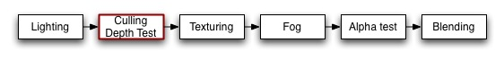

Previous
Previous

Culling is an optimization that does not render polygons facing away from the viewer. All polygons have a front and a back side. Culling makes use of the fact that most objects are closed; if you have a cube, you will never see the sides facing away from you (there is always a side facing you in front of it) so we don't need to draw the sides facing away. Hence the term: Backface culling.
The other feature that makes rendering looks correct is Depth testing. Depth testing makes sure that only the foremost objects are drawn in a scene.
Syntax
- Cull Back | Front | Off
- Controls which sidedness of polygons should be culled (not drawn)
- Back Don't render polygons facing away from the viewer (default).
- Front Don't render polygons facing towards the viewer. Used for turning objects inside-out.
- Off Disables culling - all faces are drawn. Used for special effects.
- ZWrite On | Off
- Controls whether pixels from this object are written to the depth buffer (default is On). If you're drawng solid objects, leave this on. If you're drawing semitransparent effects, switch to ZWrite Off. For more details read below.
- ZTest Less | Greater | LEqual | GEqual | Equal | NotEqual | Always
- How should depth testing be performed. Default is LEqual (draw objects in from or at the distance as existing objects; hide objects behind them).
- Offset Factor , Units
- Offsets the values drawn into the depth buffer. This allows you to force one polygon to be drawn on top of another although they are actually in the same position. For example Offset -1, -1 pulls the polygon a bit closer to the camera.
Details
Depth Testing explained.
Drawing transparent objects Back To Front.
Examples
This object will render only the backfaces of an object:
Shader "Show Insides" {
SubShader {
Pass {
Material {
Diffuse (1,1,1,1)
}
Lighting On
Cull Front
}
}
}
Try to apply it to a cube, and notice how the geometry feels all wrong when you orbit around it. This is because you're only seeing the inside parts of the cube.
Debugging Normals
The next one is more interesting; first we render the object with normal vertex lighting, then we render the backfaces in bright pink. This has the effects of highlighting anywhere your normals need to be flipped. If you see physically-controlled objects getting 'sucked in' by any meshes, try to assign this shader to them. If any pink parts are visible, these parts will pull in anything unfortunate enough to touch it.
Here we go:
Shader "Reveal Backfaces" {
Properties {
_MainTex ("Base (RGB)", 2D) = "white" { }
}
SubShader {
// Render the front-facing parts of the object.
// We use a simple white material, and apply the main texture.
Pass {
Material {
Diffuse (1,1,1,1)
}
Lighting On
SetTexture [_MainTex] {
Combine Primary * Texture
}
}
// Now we render the back-facing triangles in the most
// irritating color in the world: BRIGHT PINK!
Pass {
Color (1,0,1,1)
Cull Front
}
}
}
Glass Culling
Controlling Culling is useful for more than debugging backfaces. If you have transparent objects, you quite often want to show the backfacing side of an object. If you render without any culling (Cull Off), you'll most likely have some rear faces overlapping some of the front faces.
Here is a simple shader that will work for convex objects (spheres, cubes, car windscreens).
Shader "Simple Glass" {
Properties {
_Color ("Main Color", Color) = (1,1,1,0)
_SpecColor ("Spec Color", Color) = (1,1,1,1)
_Emission ("Emmisive Color", Color) = (0,0,0,0)
_Shininess ("Shininess", Range (0.01, 1)) = 0.7
_MainTex ("Base (RGB)", 2D) = "white" { }
}
SubShader {
// We use the material in many passes by defining them in the subshader.
// Anything defined here becomes default values for all contained passes.
Material {
Diffuse [_Color]
Ambient [_Color]
Shininess [_Shininess]
Specular [_SpecColor]
Emission [_Emission]
}
Lighting On
SeperateSpecular On
// Set up alpha blending
Blend SrcAlpha OneMinusSrcAlpha
// Render the back facing parts of the object.
// If the object is convex, these will always be further away
// than the front-faces.
Pass {
Cull Front
SetTexture [_MainTex] {
Combine Primary * Texture
}
}
// Render the parts of the object facing us.
// If the object is convex, these will be closer than the
// back-faces.
Pass {
Cull Back
SetTexture [_MainTex] {
Combine Primary * Texture
}
}
}
}